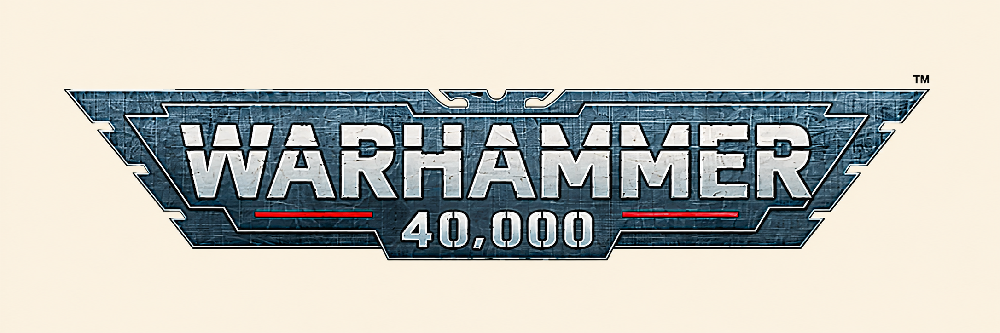
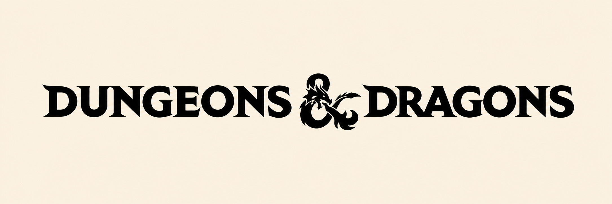
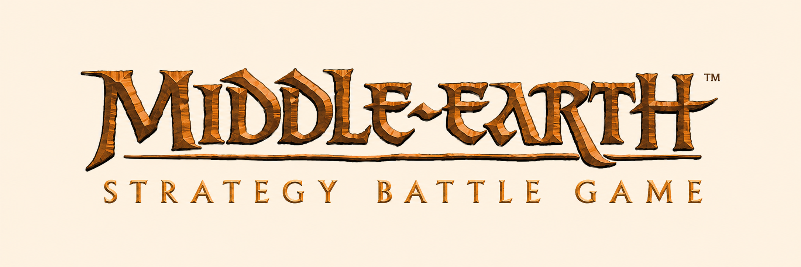

Warhammer 40,000
In the far future, humanity fights for survival against alien races, powerful armies and supernatural forces. The galaxy is filled with endless war, where every faction fights for its own cause.
Explore WH40KExplore the Universes
From fantasy heroes to futuristic warriors, there is a miniature for every kind of painter. Discover different worlds and find one that interests you.
Tabletop games bring miniature painting and gaming together. Discover different games, their miniature styles and the worlds they are part of.

In the far future, humanity fights for survival against alien races, powerful armies and supernatural forces. The galaxy is filled with endless war, where every faction fights for its own cause.
Explore WH40K
Dungeons & Dragons is a fantasy tabletop role-playing game filled with heroes, monsters and magic. Players create their own characters and explore adventures together, making every game different.
Explore D&D
Set in Middle-earth, players can bring famous heroes, armies and creatures from Tolkien's world to the tabletop. From the forces of Gondor to the armies of Mordor, the miniatures capture the epic struggle between good and evil.
Explore Middle-earthWarhammer 40,000 and the Middle-earth Strategy Battle Game are associated with Games Workshop. Dungeons & Dragons is a trademark of Wizards of the Coast.
The franchise names and logos belong to their respective rights holders. Haarlem Mini is an independent educational project and is not affiliated with or endorsed by these companies.
Official franchise websites: Warhammer 40,000, Dungeons & Dragons and Middle-earth Strategy Battle Game.